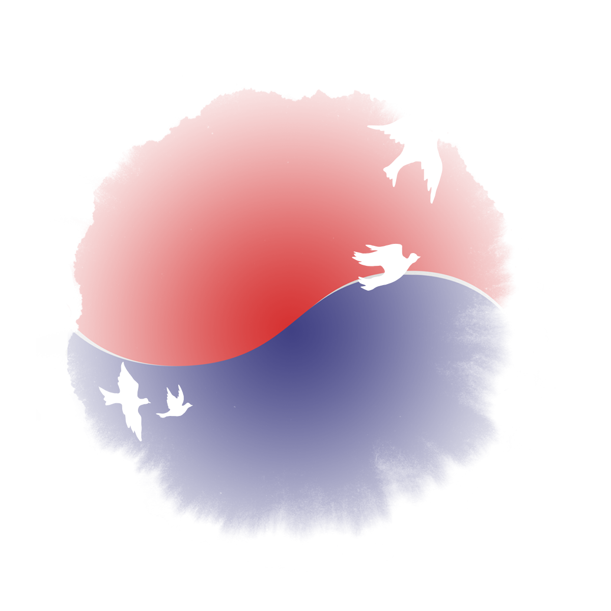

Founder portfolio · Korea / Ulsan
Jongwoo
I move businesses forward with structure, patience, and follow-through.
Over the years, I have run businesses in agriculture, software, publishing, shared workspace operations, and commerce. My work is to make complicated operations easier to understand, easier to manage, and easier to sustain.
Founder OpsSOPFinanceKPIAI AutomationR&D Planning

Profile note
Jongwoo Kim
I come from a business and finance background, and my time as a naval officer sharpened how I think about procedure, accountability, and calm execution.
Operating noteClear the ambiguity before it turns into cost.
Design moodLight, calm, and quietly confident.
About
Warm in tone, steady in execution.
This site keeps the light and personal mood of the original page, but the story is more grounded now. I am a founder who prefers practical progress over noisy promises, and I care deeply about building operating structures that people can actually keep using.
What I do best is bring order to scattered work: settlement flows, reporting routines, operating standards, decision criteria, and automation that saves time instead of creating another layer of confusion.
Education
Business and finance as a working foundation
BBA, MBA in financial management, and doctoral-level management studies.
Leadership
Procedure, safety, and responsibility
My naval officer experience shaped my approach to standards, risk control, and accountability.
Current focus
Startup planning and practical automation
These days I spend most of my time on startup planning, R&D proposals, learning roadmaps, and useful AI workflows.
Ventures
Different sectors, one operating habit.
ProfitFarm
Agriculture · exports · finance · staffing
I managed orchard operations, export preparation, finance, and people issues with an emphasis on continuity and field practicality.
Shared Workshop
Space operations · reservations · settlement · SOP
I organized booking, on-site service, settlement, and recurring tasks into repeatable routines.
DADAM Software
Web-based process design · reports · operating tools
I worked on turning business processes into usable systems for settlement, reporting, and daily management.
DADAM Publishing
Content · production · quality · partner coordination
I handled schedules, production flow, delivery, and communication in publishing and content work.
Oberstmarkets
Commerce · channel · product · pricing · promotion
I operated product, channel, pricing, and promotion work with close attention to margin and execution.
What ties them together
Founder operating perspective
Different industries, same lesson: growth only becomes useful when the operating structure can keep up.
Principles
A way of working shaped by real operations.
Evidence first
Important decisions need traceable proof, clear ownership, and a time boundary.
Fail closed
If the quality of a workflow or number is uncertain, stop the path first and reopen it after checking.
00:00 UTC snapshot
I prefer a fixed daily baseline so reports stay comparable and teams stay aligned.
±5% alert rule
When a key figure moves beyond the acceptable range, I treat it as a signal to pause, diagnose, and recheck.
Journey
From self-directed study to hands-on founder execution.
2010–2014
Business foundation and early commercial practice
I built a business foundation through self-directed study and practical work, while developing an entrepreneurial base in Ulsan.
2014–2016
Publishing, funding, and finance studies
I expanded into publishing and deepened my understanding of management and finance through formal study.
2015–2017
Naval officer service
This period gave me a lasting habit of working with procedure, safety, and responsibility under pressure.
2018–2020
Broader finance interest and founder network
I explored investing, digital assets, and founder networks while refining my own operating point of view.
2020–2024
Office build-out and multi-venture operations
I established an operating base, ran multiple ventures, and learned where real execution tends to break down.
2024–2026
Startup planning and practical AI workflows
More recently, I have focused on planning, documentation, reporting support, and automation that helps founder-led work move faster.
Skills
Original assets, arranged with more clarity.
Language
Korean
Native fluency for leadership, negotiation, reporting, and daily operations.
Language
English
Business-use English for documents, research, and international communication.
Language
Chinese
Basic working proficiency with room to grow for regional communication.
Digital build
Web Development
A practical view of web systems shaped by workflow, information structure, and usability.
Digital build
App Development
Product thinking centered on function, process fit, and field usefulness.
Analytics
R Programming
Useful for exploratory analysis, statistics, and research-oriented interpretation.
Automation
Python Programming
Used for data handling, workflow support, reporting automation, and practical AI tools.
Contact
Would you like to build something clearer together?
I am especially interested in founder operations, startup planning, R&D proposal work, practical automation, and execution systems that help real businesses move with more confidence.